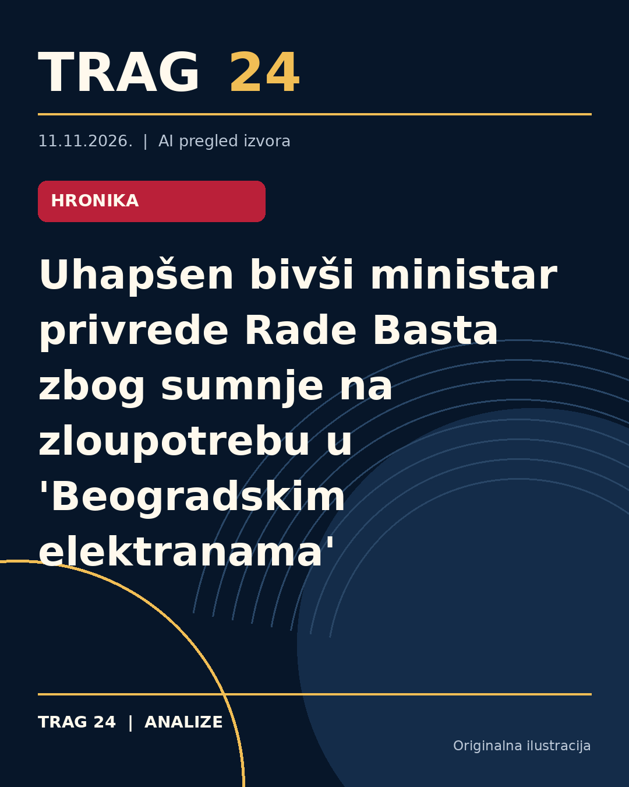

Uhapšen bivši ministar privrede Rade Basta zbog sumnje na zloupotrebu u 'Beogradskim elektranama'

ŠTA SE DOGODILO
Bivši ministar privrede Srbije Rade Basta uhapšen je u okviru koordinisane akcije Višeg javnog tužilaštva u Beogradu i Službe za borbu protiv korupcije. Hapšenje je usledilo zbog sumnje da je dok je bio direktor javnog komunalnog preduzeća 'Beogradske elektrane' zloupotrebio položaj i naneo štetu tom preduzeću, koja se procenjuje na više desetina miliona dinara. Do lišenja slobode došlo je u trenutku kada je Basta pokušao da napusti Srbiju.
HRONOLOGIJA
Rade Basta je funkciju ministra privrede obavljao od oktobra 2022. do 2023. godine, kada je razrešen dužnosti nakon što je javno zatražio od Vlade Srbije da se izjasni o uvođenju sankcija Rusiji zbog sukoba u Ukrajini. Pre hapšenja bio je direktor 'Beogradskih elektrana', gde se sada i vodi istraga. Hapšenje i pretresi obavljeni su u toku jedne akcije u Beogradu, a uz Bastu privedene su i druge osobe povezane sa sumnjama na neosnovane finansijske transakcije.
ŠTA NAVODE IZVORI
Prema saznanjima Radio-televizije Srbije i drugih izvora, Rade Basta se sumnjiči da je tokom svog mandata u javnom komunalnom preduzeću odobravao neosnovane donacije manjih sportskih klubova, uključujući fudbalske, košarkaške i jedan konjički klub. Takođe, potvrđeno je da se istraga proširila na više osoba i lokacija u Beogradu, gde su sprovedeni pretresi i privođenja. Klub i sportske organizacije kao primalaci ovih donacija nisu detaljnije opisani u dostupnim izvorima.
ŠTA JE POTVRÐENO: Hapšenje Rade Baste dogodilo se po nalogu Višeg javnog tužilaštva u Beogradu i sprovedeno je u saradnji sa Službom za borbu protiv korupcije. Postoje osnove za sumnju da je zloupotrebio svoj položaj dok je bio direktor 'Beogradskih elektrana', što je dovelo do nastanka značajne štete po preduzeće. Takođe je potvrđeno da su u toku pretresi i privođenja i drugih osoba povezanih sa ovim slučajem.
ŠTA NIJE POTVRÐENO: Do sada nema potvrda o tačnim detaljima finansijskih tokova, uključujući iznose pojedinačnih donacija ili imena svih uključenih sportskih klubova osim onih opštih kategorija. Takođe, nema izjava ili komentara samog Radeta Baste niti zvaničnih pravnih ishoda koji bi osvetlili njegovu odbranu ili dalje pravne korake.
ŠTA OSTАJE OTVORENO: Ostaju nepoznati puni detalji istrage, uključujući kako su neosnovane donacije odobravane, ko još pored Baste snosi odgovornost i koji će biti dalji tok pravnog procesa. Takođe nije jasno da li će se istraga proširiti na druge funkcije koje je Rade Basta obavljao ili povezane firme i institucije. Javnost još nije upoznata sa reakcijama sportskih klubova i drugih potencijalno uključenih aktera.
Izvori
- https://www.telegraf.rs/vesti/hronika/4430974-bivsi-ministar-privrede-rade-basta-uhapsen-na-aerodromu-pokusao-da-napusti-srbiju
- https://vreme.com/drustvo/uhapsen-rade-basta-beogradske-elektrane-donacije/
- https://www.danas.rs/vesti/drustvo/uhapsen-rade-basta-beogradske-elektrane/
Ova analiza je pripremljena uz pomoć veštačke inteligencije na osnovu javno dostupnih izvora. Navodi izvora nisu nužno nezavisno potvrđeni.